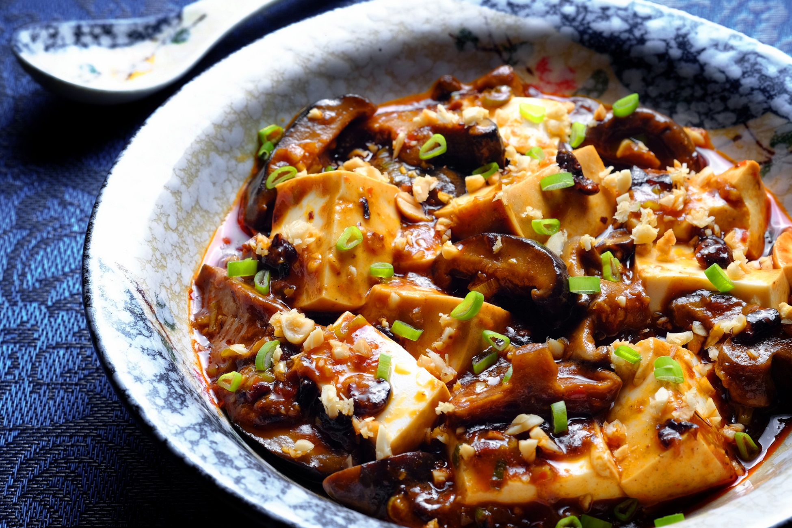

Back
Vegan Mapo Tofu

Mapo tofu is a popular Chinese dish from Sichuan province. It consists of tofu set in a spicy sauce, typically a thin, oily, and bright red suspension, based on douban, and douchi, along with minced meat, traditionally beef.
Ingredients (2 servings)
- 1/4 cup vegetable broth
- 1/2 tablespoon maple syrup
- 1 teaspoons reduced-sodium soy sauce
- 1/2 teaspoon cornstarch
- 1/2 tablespoon peanut oil
- 1/2 cup shiitake mushrooms, sliced
- 1 1/2 tablespoons fermented black beans, roughly chopped
- 1 green onions, white parts only, chopped
- 3 cloves garlic, minced
- 1/2 tablespoon fresh ginger, minced
- 1/2 teaspoon Sichuan peppercorns
- 1 tablespoon chili bean paste (doubanjiang)
- 1/2 (14 ounce) container silken tofu, cut into 1-inch cubes
- 1/2 tablespoon chile oil
- 1/2 tablespoon sesame oil
- 1 1/2 tablespoons peanuts, chopped
Directions
- 1. Mix vegetable broth, maple syrup, soy sauce, and cornstarch in a bowl.
- 2. Heat peanut oil in a wok over medium-high heat. Add mushrooms, black beans, green onions, garlic, ginger, and Sichuan peppercorns. Saute until aromatic, about 1 minute. Add chili bean paste and the soy sauce mixture. Cook and stir until thick, 3 to 5 minutes. Add tofu; cook until heated through, about 1 minute more.
- 3. Transfer cooked tofu to a serving dish; drizzle chile oil and sesame oil on top. Top with chopped peanuts.
Nutrition per servings
- 255 calories
- protein 13g
- carbohydrates 15.8g
- fat 16.3g
- sodium 657.8mg